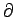

In this screen you will be asked to choose a filter of certain type,
and specify the necessary parameters. When a filter type is chosen
from a drop-down list, only fields that are relevant for its parameter
specification are shown.
These are the filter types that have been implemented:
- EKF: Extended Kalman Filter. Parameters needed: Initial
distribution of x, and the
Jacobians
f /x and
h/x. These functions are specified either by a script name or as an anonymous
function.
- PF - Simple: Particles propagate according to the state
transition equation. Parameters needed: number of particles,
resampling period, resampling algorithm, initial distribution of the
particles.
- PF - EKF: Particles propagate according to a proposal
distribution. The proposal is obtained through an EKF-like procedure
which takes into account the current observation. Parameters needed in
addtion to those for PF - Simple: the Jacobian
h/x. Note that unlike in EKF, the Jacobian
f /x is not needed, since the proposal is conditioned on
the previous value of x, as opposed to propagated from the
previous Gaussian approximation.
- PF - Regularized: Roughtly speaking, in representing the
filtered density, the delta function at each particle
location is replaced by a continuous kernel function. Parameters
needed in addition to those for PF - Simple are:
- type: when regularization is performed. For details, see Project
Report.
- whitening: whether to perform whitening on the particles. For
details, see Project Report.
- width: kernel width, whose ``optimal'' value (as a function of
state dimension and number of particles) is filled into the edit box
by PFWiz. It can be changed by a user. For details, see Project
Report.
- PF - Auxilliary Variable: Roughly speaking, this filter
approximates, using local Monte Carlo method, the ``optimal'' proposal
density that cannot be directly sampled from. Resampling is
automatically achieved in this implementation. Parameters needed:
Number of particles and their initial distribution.
The following resampling schemes are available:
- none: No resampling.
- simple: Resampling is performed using the weights.
- residual: Resampling is performed using the residual of
the weights, after the ``bulk part'' has been deterministically
chosen.
- systematic: Only one random number is drawn, and
resampling is achieved by a set of points that are equally spaced from
this random number.
- branch-kill: The resampling of each particle is
independent, therefore the total number of particles is not fixed. An
additional parameter, branch-kill threshold, needs to be
specified: When the total number of particles drops below this
percentage, a simple resampling is performed to bring it back to the
initially chosen value.
Resampling can be performed every d step, where d is specified in
the resampling period box.
As in the previous screen, the Show code button does error checking
and presents the code in an editor window. If the button Done is
clicked, a confirmation window pops up to confirm the closing of PFWiz. The editor window will remain open showing the code
generated.